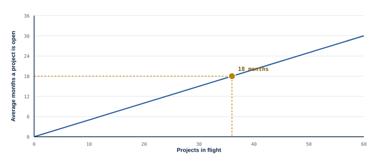
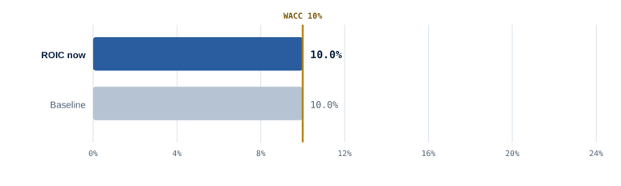

Session slides
Lean Six Sigma & Continuous Improvement · morning session, 17 October 2026 · Prof. Dr. Thiago Lima
The figures that carry the morning's argument, from the reading notes: the value stream map, the efficiency frontier, a control chart, process capability against the tolerance, Little's Law for a portfolio, the ROIC tree, the worked return-on-capital scenario, the capability stock and the Lapré classification. Two of them are live simulators in the notes — open them to move the numbers.
A change request from arrival to implementation. The boxes carry the worked time, the triangles the waiting. Four hours of work spread across fifteen working days, with almost all of the elapsed time sitting in two approval queues.
Resource efficiency and flow efficiency are not two names for the same thing, and the curve is why they trade off: with variation at its current level, the combinations beyond the frontier cannot be bought with effort. Removing variation moves the frontier towards the corner where both are high.
Twenty-four measurements of the same process. The limits are calculated from the process itself, not from the target. Two signals are present and everything else is noise — and the costly managerial error is not missing the two signals, it is explaining the noise.
On the left the mean sits on target and the tolerance is comfortable. On the right nothing changed except the centring — Cp is unmoved, Cpk halves, and the shaded tail is the share of output the customer will reject. The average is a poor promise; the spread, read against the tolerance, is the real one.

For a given rate of completion, the time a project stays open grows in a straight line with the number in flight. The dot is your organisation — 36 in flight, 24 finished a year, eighteen months. Move it left by starting less, or flatten the line by finishing more. The live version lets you do both.
The identity has two branches and the morning's work lands on both: removing defects and expediting lifts the left branch, and removing lead time lifts the right one by taking capital out of the denominator. A programme argued only as cost saving is claiming half of what it does.

Shortening lead time releases inventory, which leaves the denominator; removing rework lifts the margin, which raises the numerator. The grey bar is the starting position, where return exactly equals the cost of capital; the gold line is the only threshold that matters. Both levers clear it alone, and together they add more than the sum.
A stock with a regulated inflow and an unregulated outflow. The valve is the part most improvement programmes leave out: where surfacing a problem is costly, the measured performance improves and the real performance does not.
Projects sorted by whether they produced an understanding of the mechanism and whether that understanding was validated in the work. Only the cell that produced both accelerated the reduction of waste.
The examples run through factories because that is where the ideas were tested; the mechanisms transfer exactly — queues are queues, variability is variability. Each part of the morning ends with a bridge to project management and one thing to do on Monday.
Where value comes from, and the only two moves that create it.
Creating value is not having an advantage. Advantage is the difference — and a copyable improvement returns it to zero.
How the improvement reaches the people who fund it, through both levers at once.
Why two organisations with the same assets and processes get different results — and where the residue of advantage can live.
Most portfolio scoring models add strategic fit, NPV, risk and resources on one scale — which assumes every criterion is a winner. Compliance projects are qualifiers.
The streams worth mapping are administrative: change request to approved change, invoice to payment, defect reported to defect closed. The elapsed time lives in the handoffs around the work.
A specialist at 120% across four projects produces the entire symptom set at once: defects, waiting, unused talent. The quarter-end peak is mura — a consequence of how work was released.
Variability must be absorbed somewhere: inventory (WIP), capacity (overtime, contractors) or time (contingency). A plan at 100% allocation has chosen time without saying so.
Heijunka is resource levelling, standardised work is the PMO's methodology, poka-yoke is the mandatory field. The andon cord has no comfortable equivalent — monthly status reporting is its opposite.
Projects in flight ÷ projects completed per year is the real average lead time, whatever the schedules say. Halve what is in flight and lead time halves, with the same people and budget.
The charter is a charter, the tollgates are stage gates. The gate between Analyze and Improve — no solution until a cause is verified — is the one most governance frameworks lack, and the one that does the work.
Tools, platforms and dashboards are A; methodology, templates and certified staff are P — both available to every competitor. C is what is left.
Count elapsed time, not effort. Never "how long does this take to do" but "how long does it wait" — usually ninety per cent of the lead time.
Starting less finishes more. In flight ÷ finished a year is your real lead time, and the one number on the slide nobody can argue with.
Buy the bracket, build the coefficient. Every tool and method is available to a competitor at the same price. What is not is the repeated ability to find and fix your own problems — what Fremont changed, and what GM could not copy.
The project · the WTP edge · map the stream · the cost edge · what it builds (A, P, C) · the verdict. Pick the project the group disagrees about, not the one with the best business case. One spokesperson presents steps 1 and 6.
Open the fillable canvas ↗Only one edge moves — most portfolios are cost-edge projects; not wrong, but an unexamined choice. C is empty — projects deliver A and P because those can be specified and signed off. Neither is a failure of your project; both are findings. Keep the export for the afternoon.
From Shewhart's control chart and Toyoda's loom (1924) to the VCAP identity (2026): the two traditions — flow and variation — and the strategy and learning research that explains why the system beats the tools. Click an entry to open it on the map.
The works that carry the morning, read from theory to practice. Each row connects the author to the concept they introduced, the main contribution and the practice that follows from it. The colour follows the map legend — use “see on the map” to locate it in the network.
Each case connects a practice to the theory that explains it and to the corresponding author. Use “see on the map” to open the related node and navigate its connections.
works cited across the session, in APA 7. Click a DOI or link to open the source.
Most organisations that adopt lean copy the tools. Few reproduce the results. This app organises the morning's argument — efficiency is a consequence of what the customer values and of how work flows, not of how busy the resources are, and the returns to everything an organisation buys are scaled by a capability it cannot buy — into the following complementary areas: